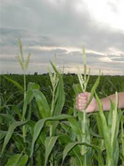
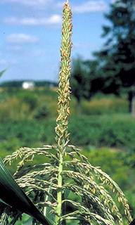

GPBR 112 :: Lecture 08 :: HYBRID SEED PRODUCTION IN MAIZE

Crossing technique : Manual emasculation by detasseling
Detasseling : Removal of male inflorescence from the monoecious crop
Time for detasseling : The time taken for shedding of pollen from the tassel in 1-2 days after emergence. Hence the tassel should be removed before the shedding of pollen.
Detasseling
Detasseling is the removal of tassel from female parent. Detasseling is done when the tassel emerged out of the boot leaf, but before anthesis have shed pollen. Anthers take 2-4 days to dehisce after complete emergence. Only in few cases, the anthers start dehisce before its complete emergence. In such case detasseling should be done earlier. Detasseling is done every day from the emergence of tassel upto 14 days.
Method
- Hold the stem below the boot leaf in left hand and the base of the basal in right hand and pull it out in a single pull.
- Grasp entire tassel so that all the pollen parts are fully removed.
- Do not break or remove leaves as removal will reduce yields and will result in lower quality of seed.

Precautions to be adopted during detasseling
- No part should be left on the plant as it causes contamination.
- It should be uniform process done daily in the morning in a particular direction.
- Donot break the top leaves as the field may be reduced due to the earning of source material to accumulate in sink [seed ] as removal of 1 leaf course 1.5% loss 2 leaves 5.9% loss and 3 leaves 14% loss in yield.
- Detassel only after the entire tassel has come out and immature detasseling may lead to reduced yield and contamination.
- Mark the male rows with marker to avoid mistake in detasseling
- Look out for shedders [shedding tassel] in female rows as the may cause contamination.
- After pulling out the tassel drop it there itself and bury in soil. Otherwise late emerging pollen from detasseled tassel may cause contamination.
- Do not carry the tassel through the field as any fall of pollen may lead to contamination.
- Donot practice, improper, immature and incomplete detasseling.
- Improper detasseling: A portion of the tassel is remaining in the plant while detasseling.
- Immature detasseling: Carrying out detasseling work when the tassel is within the leaves.
- Incomplete detasseling: The tassel is remaining in lower or unseen or unaccounted in within the whole of leaves.
- There should not be any shedding tassel.
- Shedding tassel: Either full or part of tassel remain in female line after detasseling and shedding pollen which may contaminate the genetic purity of the crop.

System of Hybrid seed production
- Detasseling ( Manual creation of male sterility )
Types of hybrids
Single cross hybrid
It is a cross between 2 inbreds. A x B. A genotype will be detasseled and crossed with B genotypes.
- COH 1- UMI 29 x UMI 51
- COH 2- UMI 810 x UMI 90
- CoH(M) 5-UMI 285 X UMI 61
Double cross
- It is a cross between two single crosses.
- It is a cross between 2 hybrids (A x B) x (C x D) (A x B) single cross hybrid will be produced by detasseling A and by crossing with B (C x D) hybrid will be produced by detasseling C and crossing with D.
- Then (A x B) will be detasseled and crossed with (C x D) hybrid.
Example
Ganga 2 : (CM 109 x CM 110) x (CM 202 x CM 111)
Ganga 101 : (CM 103 x CM 104) x (CM 201 x CM 206)
COH3 : ( UMI 101 x UMI 130 ) x (UMI 90 x UMI 285 )
Three way cross
- It is a cross between a single cross and an inbred.
- It is first generation resulting from the crossing of on approved inbred line and a certified open pollinated variety A x variety)
- A will be detasseled and allowed for crossing in the variety.
Example Ganga -5 (CM 202 x CM 111) x CM 500.
COH (M) 4 : (UMI 90 x UMI 285) x UMI 112
Double top crosses : The first generation resulting from the controlled crossing of a certified single cross and a certified open pollinated variety. : (A x B) x variety : (Ax B) will be detasseled and crossed with a variety
Seed production technology
Season - November- December, Mid July, Jan. Feb and Sep. Oct
Isolation distance
Foundation seed (m) Certified seed (m)
1. Inbreds 400 -
2. Single cross hybrid 400 -
Field standards for isolation (modification based on situation)
For (foundation single crosses and hybrid of certified class)
|
Foundation stage |
Certified stage |
|
400 |
200 |
|
600 |
300 |
|
400 |
200 |
|
5 |
5 |
|
400 |
200 |
- Differential blooming dates are permitted for modifying isolation distance provided 5.0% or more of the plants in the seed parent do not have receptive silk when more than 0.20% of the plants in the adjacent field within the prescribed isolation distance are having shedding pollen.
- In hybrid seed production (certified seed stage) alone the isolation distance (less than 200 meter) can be modified by increasing the border rows of male parent, if the kernal colour and texture of the contaminant are the same as that of the seed parent.
The number of border rows to be planted all around the seed field to modify isolation distance less than 200 m shell also be determined by the size of the field and its distance from the contaminant as shown below.
Area in ha. |
Isolation distance (m) |
Border rows |
< 4 ha |
200 |
1 |
< 4 ha |
150 |
5 |
< 4 ha |
100 |
9 |
< 4 ha |
50 |
13 |
10-12 ha |
180 |
1 |
10-12 ha |
130 |
5 |
10-12 ha |
80 |
9 |
10-12 ha |
30 |
13 |
> 16 ha |
165 |
1 |
> 16 ha |
115 |
5 |
> 16 ha |
65 |
9 |
> 16 ha |
15 |
13 |
Seed production stages and production of parental lines / hybrids
Stage of seed |
Single |
Double cross |
Three way cross |
Double top cross |
Top |
Breeder seed |
A, B |
A, B, C, D |
A, B, C |
A, B, variety |
A, variety |
Foundation seed |
A, B |
(AxB) (CxD) |
(AxB), C |
(AxB) variety |
A, variety |
Certified seed |
A X B |
(AxB) x (CxD) |
(AxB) x variety |
(AxB) x variety |
Ax variety |
Spacing
Seeds are sown in ridges and furrows
Hybrids : 60x 25 cm
Seed rate : Female : 7 -10 kg ha-1
: Male : 3 -4 kg ha-1
Spacing : Female : 60 x 20 to 75 x 30 depending on the area.
Male :45 x 30 cm
Planting ratio
Single cross 4:2
Double cross 6:2
3 way cross 6:2
Border rows a. Inbreds & single cross - 4 rows
b. Others - 3 rows
Fertilizer
NPK kg / ha : 200 : 100 : 100
Basal : 100 : 100 : 50
1st Top : 50 : 0 : 0 (20th days -vegetative phase)
2nd Top : 50 : 0 : 50 (Boot leaf stage at 45 days)
Foliar : DAP 2% at 50% flowering
In Zn deficient soil : ZnSO4 @ 25 kg ha-1
Roguing
Should be done periodically based on position of cob, colour of silk, arrangements of seeds in cob, leaves etc. Shedding tassels are to be removed in roguing . It refers to the tassels in female parents rows, shedding pollen or that has shed pollen in hybrid maize plots. During field inspection a tassel whose main spike or any side branch or both have shed pollen or shedding pollen in more than 5 cm of branch length is counted as a shedding tassel during inspection the shedding tassels are taken into count for acceptance or rejection of production plot.
Field standard (%)
FS CS
Off types 0.2 0.5
Shedding tassel 0.5 1.0 (when receptive silk is 5% or more)
Inseparable other crop : Nil (both stage)
Objectionable weed : Nil (both stage)
Designated diseases : Nil (both stage)
Field standards –specific
Specific factors |
Certified stage |
Off types shedding pollen when 5 % or more of seed parent in receptive silk |
0 .50 % |
Seed parent shedding pollen when 5 % of the seed parent is having receptive silk |
1.0 % |
Total of pollen shedding tassel including tassel that had shed pollen for all 3 inspections conducted during flowering on different dates |
2 .0 % |
Off types in seed parent at final inspection |
0 .5 % |
Number of inspection : Four
(Seed certification officers) : One : Before flowering
: Three : During flowering
Harvest
- Harvest when the moisture content falls to 20-25%
- Harvest male first and remove from the field and then harvest female
Threshing
a. Dehusking - The husks are removed manually.
b. Cob sorting - Remove ill filled, diseased cobs and cobs having kernel colour variation.
Zenia
The direct/visible effects of pollen on endosperm and related tissues in the formation of a seed colour. e.g. seed colour. In maize, the gene present in sperm cell contributes in the expression of colour of hybrid seeds.
Matazenia
Is the effect of pollen on the maternal tissues of fruit.
Shelling
Cob sorting should be the first operation it is a post harvest, evaluation for genetic purity. The sheath is removed and check for kernel colour, shank colour, diseased cobs, kernel arrangement. The cobs are shelled either mechanically or manually at 15-18% moisture content. Improper shelling leads to48% damage to kenel Growth of storage fungal Pericarp damage. Crack on pericarp can be identified by FeCl3 or Tz test. Shelling is done mechanically using cob sheller and manually by rubbing with stones.
Drying
Seeds are dried to 12% moisture content.
Grading
Grade the seeds using 18/64" (7.28 mm) sieve.
Seed treatment
Slurry treat the seeds with 8% moisture content either with captan or thiram 75% W.P. @ 70 g/100 kg with 0.5 litre of water. Treated seeds can be stored for 1 year in cloth bag.
Others: As in varietal seed production
Seed yield : 2.5 - 3.6 t/ha
Seed standard inbred, varieties and hybrids
Hybrids
Parameters Inbreds FS CS
1. Physical purity (%) (min) 98 98 98
2. Inert matter (%) (max) 2 2 2
3. Other crop seed (max) 5 /kg 5 kg-1 10 kg-1
4. ODV seeds (max) 5/kg 5 kg-1 10 kg-1
5 Germination % (min) 80 80 90
6. Moisture content (%) (max)
a. Moisture pervious 12 12 12
b. Moisture vapour proof 8 8 8
Production of Synthetic cultivars
Breeding of cereal and other agronomic crops has contributed significantly to the growth of agribusiness worldwide. In normally self fertilized crops, new variability may be created by hybridisation, followed by the selection of desired cultivars in which desirable characteristics from two or more parents are combined. The type of hybrid cultivar obtained will depend upon the genetic background of the chosen parents as well on the method of selection used. A similar situation arises when new variability is artificially induced through mutations.
In pure-line theory of classic plant breeding, a pure line is defined as all the descendants of single homozygous individual by continued self-fertilization, resulting in a homogeneous cultivar. Hybridization, however, results in significant heterogenity. The multiplication of such heterogenous progeny in bulk to select homozygous individuals would be gigantic task. Most modern hybrid cultivars are, therefore, selected at an early stage (F2) as subsequent lines and probably released at the F8 and F12 generations. These are obviously not as homogeneous as a pure line.
Cultivars can also be selected by producing multilines. Whereas normal line selection seeks to produce a new cultivar on the basis of one line or a few lines that are very similar, multiline cultivars are essentially different from each other in their characteristics, such as resistance to pests and diseases or environmental stresses. Thus, by incorporating different sources of resistance, the newly synthesized cultivar is buffered against changes brought about by virulent pathognes. These cultivars are however, not very stable compared to those produced by the conventional methods of selection. A change in the prevalence of a virulent pathogen may eliminate certain lines from the cultivar. It is, therefore, necessary to return the cultivar to the plant breeder for its reconstitution. This may be advantageous, because it enables plant breeders to substitute new sources of resistance in the material.
Alternatively, the plant breeder can create a composite cross by bulking the F2 generations of several crosses. The composite is allowed to develop for several generations during which natural selection may occur. If the composite is grown at more than one location, a locally adapted cultivar may be developed in time. The
composite constitutes a gene pool from which the plant breeder can select a cultivar with desirable characteristics for further multiplication.
An alternative to the composite is the synthetic or artificial method of plant
breeding in which a number of lines are put together by the plant breeder in predetermined proportions. A synthetic line generally has a limited life, because the proportions of the constituent lines are likely to change over number of generations. The plant breeder must plan for seed production of limited generation basis. This system can be extended by using mixtures of cultivars claimed to be advantageous in some species over a single cultivar, especially if different resistant genes are present in each cultivar. This method adds to the cost of mixing, which can be reduced by growing a seed crop for one or two generations after mixing before using it for crop production.
A hybrid cultivar results from a controlled cross between a male and female parent, the seed being harvested from female parent only and used for crop production.
In self fertilized crop species, it is easy to produce hybrid cultivars if male sterile lines are available that can be used as female parents. There are certain substsnces that act as a gametocides, destroying the pollen of desired female parent, or as inhibitors that prevent pollen produced by the female parent from effecting fertilization. The advantage of the synthetic hybrid cultivar lies in heterosis. Special expensive measures are required to produce seed that is harvested from the female parent only. The resultant heterosis therefore must have a profitable effect to compensate for the cost of production of synthetic hybrid cultivars in the self pollinating crop species.
In the cross pollinated crop species, plant breeders look for parent plants that have good combining ability. These plants, when allowed to multiply together, produce a desirable combination of characteristics. Cross fertilization results in greater heterozygosity in these plants than in the self fertilized plants and therefore less homogeneity. Each generation of an open pollinated cultivar is thus a mixture of hybrids. The open pollinated cultivars are generally grown for a limited number of generations and returned to the plant breeder’s maintenance material after each cycle of seed production to produce commercial quantities of seeds.
Putting together a large number of parent plants and allowing random pollination to occur can create composites. A composite in a cross fertilized species is generally the product of the first generation of such random pollination.
Production of synthetic cultivars begins with a limited number of specific parents, which are permitted to interpollinate. The number of generations of multiplication is strictly limited so as to recreate the synthetic/artificial cultivar at the end of each multiplication cycle. As with the self fertilized species, synthetic hybrid cultivars of cross fertilized species are created by controlling pollination to ensure that seed is produced from a desired crossing. This can be achieved by the following methods.
1) By emasculating the female parent, as is done in monoecious plants like maize, by removing the male flowers before the release of pollens.
2) By using male sterility in the female line, so as to avoid the physical removal of male flowers.
3) By using self incompatibility. In this system, the seed crop is harvested as a whole, since all plants are contributing and receiving pollen. The self incompatibility, however, is not always complete, and there may be production of some inbred plants. With the excessive production of such plants, the advantage of heterosis in the subsequent crop is diminished.
The advantage of the synthetic hybrid cultivar in cross pollinated species is not restricted only to heterosis. Most hybrids are based upon inbred lines. Normally, cross fertilized plants require inbreeding for several generations to reduce heterozygosity and to include desirable genes in synthetic cultivars. A controlled cross between two such inbreds produces heterosis and desirable combination of genes in the form of a synthetic cultivar.
The major disadvantage of the production of synthetic cultivars is the higher cost of plant breeding and seed production, requiring considerable time consuming work to produce desirable inbreds, which alone can be used to synthesize new artificial hybrids. The final seed crop is not fully productive when male sterility or emasculation is used, because only the female parent is harvested for seed.
Therefore various other hybrids have been produced. The hybrid resulting from the cross of two inbred lines is a single cross, whereas the F1 resulting from the cross of two single cross hybrids as parents is known as a double cross. In a three way cross, an inbred is mated with an f1 hybrid. A top cross is the F1 resulting from a cross between an inbred or a single cross and an open pollinated cultivar. All of the forms of hybrid cultivars require a particular cycle of seed production to produce the seed used in crop production.
| Download this lecture as PDF here |